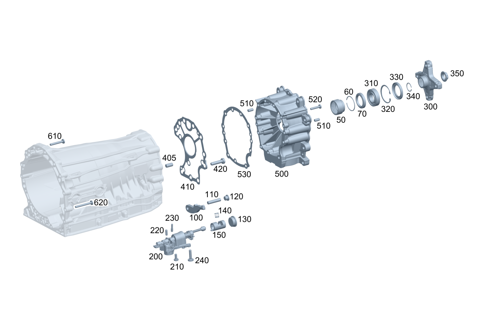

| № | Артикул | Название | Кол. | Примечание | Ограничение |
|---|---|---|---|---|---|
| 50 | A 725 981 09 11 | Игольчатый подшипник (NADELHUELSE) | 1 | ||
| 50 | A 725 981 10 00 | Игольчатый подшипник (NADELHUELSE) | 1 | ||
| 60 | A 006 994 15 40 | Пруж. стопорное кольцо (SPRENGRING) | 1 | ||
| 70 | A 725 272 70 02 | Втулка подачи масла (OELFUEHRUNGSBUCHSE) | 1 | ||
| 100 | A 725 278 25 00 | Собачка (SPERRKLINKE) | 1 | ||
| 110 | A 725 278 03 00 | Штифт собачки (BOLZEN SPERRKLINKE) | 1 | ||
| 120 | A 004 990 70 12 | Резьбовая пробка (VERSCHLUSSSCHRAUBE) | 1 | M16X1.5 | |
| 120 | A 000 990 97 57 | Резьбовая пробка (VERSCHLUSSSCHRAUBE) | 1 | M16X1,5 | |
| 130 | A 004 990 69 12 | Резьбовая пробка (VERSCHLUSSSCHRAUBE) | 1 | M36X1.5 | |
| 130 | A 000 990 81 46 | Резьбовая пробка (VERSCHLUSSSCHRAUBE) | 1 | M36X1.5 | |
| 130 | A 000 990 98 57 | Резьбовая пробка (VERSCHLUSSSCHRAUBE) | 1 | M36X1,5 | |
| 140 | A 011 993 12 01 | Нажимная пружина (DRUCKFEDER) | 1 | ||
| 150 | A 725 270 41 17 | Направляющая втулка (FUEHRUNGSBUCHSE) | 1 | ||
| 200 | A 725 906 47 00 | Исполнительный элемент (AKTUATOR) | 1 | ||
| 200 | A 725 906 49 00 | Исполнительный элемент (AKTUATOR) | 1 | A270 | |
| 210 | N 000000 008251 | - Винт с 6-гр. глвк (SECHSRUNDSCHRAUBE) | 4 | M6X14 [402] БОЛЬШЕ НЕ ПОСТАВЛЯЕТСЯ | |
| 220 | A 611 997 02 10 | - Цилиндрический шрифт (ZYLINDERSTIFT) | 3 | ||
| 220 | A 611 997 02 10 | - Цилиндрический шрифт (ZYLINDERSTIFT) | 2 | A270 | |
| 230 | A 000 994 52 00 | - Стопорный штифт (SICHERUNGSSTIFT) | 1 | [417] БОЛЬШЕ НЕ ПОСТАВЛЯЕТСЯ, ЗАКАЗЫВАТЬ КОМПЛЕКТ ПОСТАВКИ | A270 |
| 240 | A 004 990 74 12 | болт (SCHRAUBE) | 6 | M6X25 | |
| 300 | A 725 272 81 02 | Фланец шарнира (GELENKFLANSCH) | 1 | 6A4 | |
| 300 | A 164 272 01 45 | Фланец (FLANSCH) | 1 | 6A5 | |
| 300 | A 725 272 79 02 | Фланец шарнира (GELENKFLANSCH) | 1 | 6A1 | |
| 300 | A 725 272 80 02 | Фланец шарнира (GELENKFLANSCH) | 1 | 6A2 | |
| 300 | A 906 272 04 00 | Фланец шарнира (GELENKFLANSCH) | 1 | 6A6 | |
| 310 | A 725 981 01 25 | Рад. шарикоподшипник (RILLENKUGELLAGER) | 1 | ||
| 320 | A 012 994 74 41 | Стопорное кольцо (SICHERUNGSRING) | 1 | ||
| 330 | A 725 997 03 46 | Радиальный сальник (RADIALWELLENDICHTRING) | 1 | ||
| 330 | A 725 997 04 46 | Радиальный сальник (RADIALWELLENDICHTRING) | 1 | G062/G063/G074/(G044+7A7) | |
| 330 | A 725 997 04 46 | Радиальный сальник (RADIALWELLENDICHTRING) | 1 | G062/G063/G074/G077/((G044/G047)+7A7) | |
| 330 | A 725 997 04 46 | Радиальный сальник (RADIALWELLENDICHTRING) | 1 | G064/G072/G071/G073/G081/7A7 | |
| 330 | A 725 997 04 46 | Радиальный сальник (RADIALWELLENDICHTRING) | 1 | G064/G072/G076/G071/G075/G073/G081/G082/7A7 | |
| 340 | A 012 994 68 41 | Стопорное кольцо (SICHERUNGSRING) | 1 | 1.50 MM | G062/G063/G074/G077/((G044/G047)+7A7) |
| 340 | A 012 994 69 41 | Стопорное кольцо (SICHERUNGSRING) | 1 | 1.55 MM | G062/G063/G074/G077/((G044/G047)+7A7) |
| 340 | A 012 994 70 41 | Стопорное кольцо (SICHERUNGSRING) | 1 | 1.60 MM | G062/G063/G074/G077/((G044/G047)+7A7) |
| 340 | A 012 994 71 41 | Стопорное кольцо (SICHERUNGSRING) | 1 | 1.65 MM | G062/G063/G074/G077/((G044/G047)+7A7) |
| 340 | A 012 994 72 41 | Стопорное кольцо (SICHERUNGSRING) | 1 | 1.70 MM | G062/G063/G074/G077/((G044/G047)+7A7) |
| 340 | A 012 994 68 41 | Стопорное кольцо (SICHERUNGSRING) | 1 | 1.50 MM | G064/G072/G076/G071/G075/G073/G081/G082/7A7 |
| 340 | A 012 994 69 41 | Стопорное кольцо (SICHERUNGSRING) | 1 | 1.55 MM | G064/G072/G076/G071/G075/G073/G081/G082/7A7 |
| 340 | A 012 994 70 41 | Стопорное кольцо (SICHERUNGSRING) | 1 | 1.60 MM | G064/G072/G076/G071/G075/G073/G081/G082/7A7 |
| 340 | A 012 994 71 41 | Стопорное кольцо (SICHERUNGSRING) | 1 | 1.65 MM | G064/G072/G076/G071/G075/G073/G081/G082/7A7 |
| 340 | A 012 994 72 41 | Стопорное кольцо (SICHERUNGSRING) | 1 | 1.70 MM | G064/G072/G076/G071/G075/G073/G081/G082/7A7 |
| 350 | A 140 990 11 50 | Гайка 12-гран. с фланцем (12-KANTMUTTER MIT FLANSCH) | 1 | M26X1.5 | |
| 405 | A 094 990 25 03 | - Цилиндрический штифт (ZYLINDERSTIFT) | 1 | (G041/G042/G044)+7A7 | |
| 405 | A 094 990 25 03 | - Цилиндрический штифт (ZYLINDERSTIFT) | 1 | (G041/G045/G042/G046/G044/G047)+7A7 | |
| 410 | A 725 271 43 00 | Металлическая прокладка (ZWISCHENBLECH) | 1 | G071/G072/G073/G081 | |
| 410 | A 725 271 43 00 | Металлическая прокладка (ZWISCHENBLECH) | 1 | G071/G075/G072/G076/G073/G081/G082 | |
| 410 | A 725 271 43 00 | Металлическая прокладка (ZWISCHENBLECH) | 1 | G071/G075/G072/G076/G073/G081/G082 | |
| 410 | A 725 271 43 00 | Металлическая прокладка (ZWISCHENBLECH) | 1 | G074/G077 | |
| 410 | A 725 271 43 00 | Металлическая прокладка (ZWISCHENBLECH) | 1 | (G074/G077/G083) | |
| 420 | A 012 990 20 04 | Винт Torx с полукр. гол. (LINSENKOPFSCHRAUBE M. ISR) | 10 | Корпус адаптера к корпусу коробки передач; M12X1,5X50 | G062/G081/G064/G071/G072/G073 |
| 420 | A 012 990 20 04 | Винт Torx с полукр. гол. (LINSENKOPFSCHRAUBE M. ISR) | 10 | Корпус адаптера к корпусу коробки передач; M12X1,5X50 | G062/G081/G082/G064/G071/G075/G072/G076/G073 |
| 420 | A 012 990 20 04 | Винт Torx с полукр. гол. (LINSENKOPFSCHRAUBE M. ISR) | 10 | Корпус адаптера к корпусу коробки передач; M12X1,5X50 | G062/G081/G082/G064/G071/G075/G072/G076/G073 |
| 420 | A 012 990 20 04 | Винт Torx с полукр. гол. (LINSENKOPFSCHRAUBE M. ISR) | 10 | Корпус адаптера к корпусу коробки передач; M12X1,5X50 | G074/G077 |
| 420 | A 012 990 20 04 | Винт Torx с полукр. гол. (LINSENKOPFSCHRAUBE M. ISR) | 10 | Корпус адаптера к корпусу коробки передач; M12X1,5X50 | (G074/G077/G083) |
| 420 | A 012 990 20 04 | Винт Torx с полукр. гол. (LINSENKOPFSCHRAUBE M. ISR) | 9 | Корпус адаптера к корпусу коробки передач; M12X1,5X50 | (G064/G081/G072)+A133 |
| 420 | A 012 990 20 04 | Винт Torx с полукр. гол. (LINSENKOPFSCHRAUBE M. ISR) | 9 | Корпус адаптера к корпусу коробки передач; M12X1,5X50 | (G064/G081/G082/G072/G076)+A133 |
| 420 | A 012 990 20 04 | Винт Torx с полукр. гол. (LINSENKOPFSCHRAUBE M. ISR) | 9 | Корпус адаптера к корпусу коробки передач; M12X1,5X50 | (G081/G072)+53A+A133 |
| 500 | A 164 270 03 11 | Корпус коробки передач (GETRIEBEGEHAEUSE) | 1 | G041/G042/G051 | |
| 500 | A 164 270 03 11 | Корпус коробки передач (GETRIEBEGEHAEUSE) | 1 | G041/G045/G042/G046/G051/G052 | |
| 510 | N 000000 002778 | - Цилиндрический штифт (ZYLINDERSTIFT) | 4 | G031/G041/G042/G044/G051 | |
| 510 | N 000000 002778 | - Цилиндрический штифт (ZYLINDERSTIFT) | 4 | G031/G041/G045/G042/G046/G044/G047/G051/G052 | |
| 510 | N 000000 002778 | - Цилиндрический штифт (ZYLINDERSTIFT) | 4 | G031/G041/G045/G042/G046/G044/G047/G051/G052/G053 | |
| 520 | A 004 990 53 12 | Болт с головкой торкс (SECHSRUNDSCHRAUBE) | 11 | M8X40 | G041/G042/G051 |
| 520 | A 004 990 53 12 | Болт с головкой торкс (SECHSRUNDSCHRAUBE) | 11 | M8X40 | G041/G045/G042/G046/G051/G052 |
| 530 | A 164 277 00 14 | Промежуточная пластина (ZWISCHENPLATTE) | 1 | G041/G042/G051 | |
| 530 | A 164 277 00 14 | Промежуточная пластина (ZWISCHENPLATTE) | 1 | G041/G045/G042/G046/G051/G052 | |
| 610 | A 006 990 49 12 | Винт со сфероцил. головой (LINSENKOPFSCHRAUBE) | 2 | M8X55 | |
| 620 | A 006 990 62 12 | Винт со сфероцил. головой (LINSENKOPFSCHRAUBE) | 7 | Основная коробка передач к шасси без кабины; M8X70 |
Позиций: 69 · подписано на схемах: 69 · колесо — плавный зум в курсор, перетаскивание — пан, двойной клик — зум, клик по артикулу — скопировать.